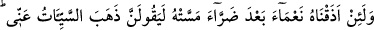
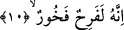
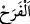

Nankörlük demek, nimeti ve iyiliği inkar etmek, görmezlikten gelmek, nimeti verene
şükür ve hamd etmemek ve nimeti vereni övmemek demektir.
Burada, nimetin çekilip alınmasının sırf nankörlüklerinden kaynaklandığına işaret
vardır.
10. Eğer kendisine dokunan bir zarardan sonra ona bir nimet tattırsak, mutlaka
“Kötülük benden gitti.” der, sevinir, övünür.”
“Eğer kendisine dokunan bir zarardan sonra ona” hastalıktan sonra sağlık,
yokluktan sonra varlık, sıkıntıdan sonra rahatlık gibi “bir nimet tattırsak”
Allah Teâlâ, ‘nimet tattırma’yı kendi şerefli zâtına izâfe ederken, ‘zarar dokunması’nı
yüce zâtına değil de insanın nefsine izâfe etmiştir. Böylece asıl maksadın sırf kendi fazl
u keremi ve rahmeti sebebiyle kullara hayır ulaştırmak olduğuna, kötülük dokunmasının
ise kişinin kendi kötülüğüne, durumunun bozukluğuna Allah’ın verdiği karşılık ve
intikamdan kaynaklandığına dikkat çekmektedir. Allah Teâlâ şöyle buyurmaktadır:
“Sana gelen iyilik Allah’tandır. Başına gelen kötülük ise nefsindendir.” (en-Nisa,
4/39)
Kadı Beydâvî’nin aşağıdaki sözlerinden maksad da budur: “Âyette iki fiilin farklı
gelmesinde gizli olmayan bir nükte vardır. Rahmet ve nimet verilmesi, tat almaktan
ibaret bulunan ‘zevk’ kelimesiyle ifâde edilmiştir. Zarar gelmesi ise ulaşmanın
başlangıcı olan ve sanki tesir etmeksizin deriye bitişik bulunuyormuş izlenimi veren
‘dokunma’ kelimesi ile ifade edilmiştir. Böylece insanların şu dünyada karşılaştıkları
nimet ve mihnetlerin âhirette karşılaşacakları nimet ve mihnetler için birer örnek
olduğuna dikkat çekilmektedir.”
İnsan “mutlaka: “Kötülük benden gitti.” yâni beni kötü duruma sokan istenmeyen
şeyler ve musibetler gitti, yani kerih gördüğüm şeyler sona erdi, benzeri durumlar bir
daha kesinlikle başıma gelmeyecek “der.” Çünkü aynı durumların geleceğini bilip
bunları beklemek, sevince gölge düşüren, rahat yaşamaktan alıkoyan şeylerdendir.
“sevinir,” yâni mağrur olarak neşelenir.
“” kelimesi, Kur’an-ı Kerim’de mutlak (kayıtsız) olarak kullanıldığında
kötülemek içindir. Övmek için kullanıldığında ise hayır mânâsı taşıyan bir kayıt ile
gelir. “Allah’ın kendilerine fazl u kereminden verdiklerine sevinerek...” (Âl-i İmran,
3/170) âyetinde olduğu gibi. Müfti Sa’di’nin Hâşiye’sinde böyle geçmektedir.
Fakir (Bursevî) şöyle der: Şu âyet bu genellemeye ters düşmektedir: “Kendilerine